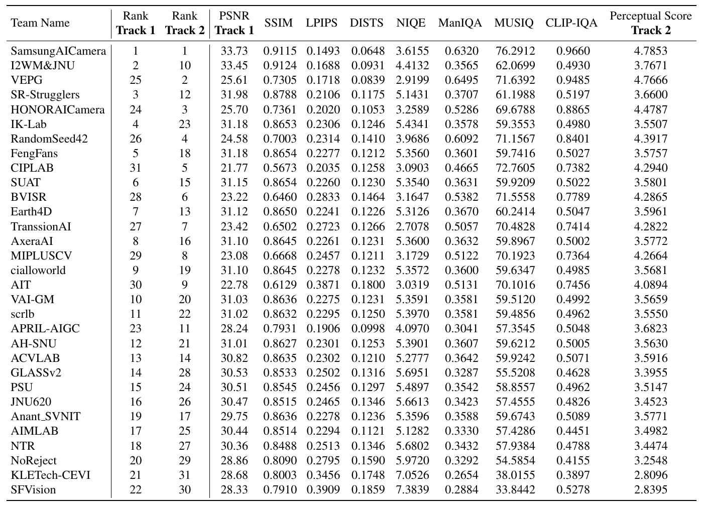
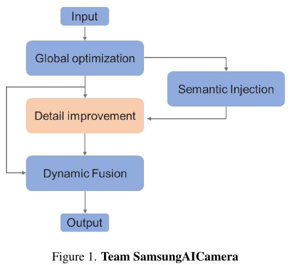
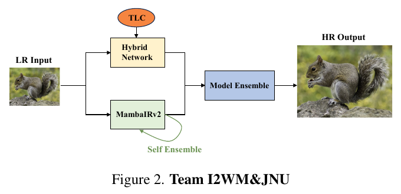
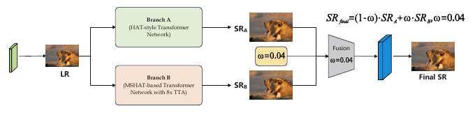
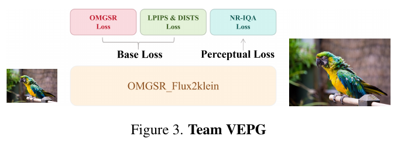
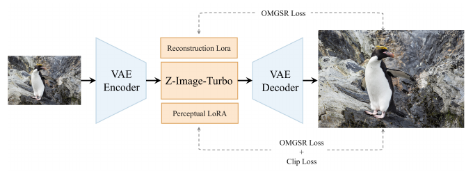

论文
NTIRE 2026 ×4 超分挑战赛报告：两条赛道的冠军是同一个回归网络，亚军是去年冠军的权重重跑

代码与数据来源说明：报告首页给的代码仓库是 zhengchen1999/NTIRE2026_ImageSR_x4，本页
repo/是它的克隆（HEAD4143d8c，2026-06-16，"update bib"）。仓库里有评测脚本eval.py、统一入口test.py、31 个队伍目录models/teamXX_*（目录编号按提交时间排，从 team01 到 team33，和 README 里按名次排的 1–31 号对不上），以及model_zoo/下每队一个只有网盘链接的 txt。权重都放在百度网盘，本页没有下载，所以下面的分析没有跑过任何模型，只是对照代码和表格。补充材料（22 页，剩余 25 队的方法描述）来自仓库 release v1。2025 年的对照数字取自上一届报告的 CVF 版 PDF（Chen et al., CVPRW 2025, pp. 1525 起）。这是一份挑战赛报告，不是方法论文：§2 的「方法」写的是赛制和前几名方案，§3 写数字说明了什么，§4 写报告和代码的出入。
任务
经典 bicubic ×4 超分：HR 图用 bicubic 缩小 4 倍得到 LR，从 LR 恢复 HR。训练可用 DIV2K（800 张）、LSDIR（84,991 张）和任意声明过的外部数据，测试是 DIV2K test 的 100 张，HR 不公开。
评测
Track 1：PSNR（报告写 Y 通道、裁边 4 像素）。Track 2：感知分 = (1−LPIPS) + (1−DISTS) + CLIP-IQA + MANIQA + MUSIQ/100 + max(0, (10−NIQE)/10)，满分约 6。每队一套输出，同时参加两条赛道的排名。
结果
三星两条赛道都是第一（33.73 dB / 4.7853）。Track 1 前三里有两家直接复用了 2025 年的冠亚军权重。Track 2 前五里，除了三星都是一步扩散 / 流模型（FLUX.2-klein、Z-Image-Turbo、SD 系）。
证据强弱
只有一张数字表和每队的方案示意图，没有视觉对比，没有主观评测，也没有任何消融。7 条「趋势」是按方案描述归纳的，没有和名次做对照。正文的三处计数和表 1 对不上。
术语速查
Bicubic ×4
最经典的超分设定：退化只有一个已知的 bicubic 缩小，没有噪声、模糊和压缩。好处是可比，坏处是和真实相机的退化差得远。
PSNR / SSIM
逐像素的保真度指标，越高越好。PSNR 对平均误差敏感，所以「取条件均值」的回归网络最占便宜，输出往往偏糊。
LPIPS / DISTS
有参考的感知距离：把输出和真值都送进预训练网络，比较深层特征，越低越好。它们仍然需要真值，所以生成「不存在的细节」会被扣分。
NR-IQA
无参考质量评分：NIQE（越低越好）、MUSIQ、MANIQA、CLIP-IQA（越高越好）。只看输出本身，不看真值。它们都是神经网络（NIQE 是统计模型），都能被针对性地优化或攻击。
CLIP-IQA
用 CLIP 比较图像和「Good photo / Bad photo」两段提示词的相似度，得到 0–1 的分数。可微，可以直接当损失函数用。
自集成（×8 TTA）
把输入做 4 种旋转 × 2 种翻转，分别推理后再变换回来取平均。通常能稳定涨 0.1 dB 左右 PSNR，代价是 8 倍推理时间。
TLC
Test-time Local Converter：训练时在小块上做的全局池化，推理时换成局部窗口池化，让大图推理和训练时的统计一致。NAFNet 一类网络常用。
OMGSR
一步扩散超分（本站有 omgsr-2025 的精读）：把 LR 的潜变量当作扩散调度中间某个时刻 t* 的带噪潜变量，一步去噪，用 GAN 训练。本届 Track 2 第二、第三名都建在它上面。
感知–失真权衡
Blau & Michaeli（CVPR 2018）证明：在失真（如 MSE）上最优的估计，输出分布一定偏离自然图分布，两者不能同时最优。超分里通常表现为 PSNR 越高、看起来越糊。
1. 出发点：bicubic ×4 为什么还在办，今年换了什么
bicubic ×4 是超分里最老的基准。退化已知且唯一，所以不同方法可以直接比，但它离真实相机很远：没有噪声，没有镜头模糊，没有压缩。NTIRE 在 2017、2018 年办过这个设定，2023 年起又连续办了四届（2023、2024、2025、2026），本届是第四届，用的都是 DIV2K test 这 100 张图。报告的说法是，在这个干净设定上训练的模型「往往能很好地迁移到更复杂的退化」，并且它能给学界和业界提供一个统一的榜单。
从 2025 年起，比赛分成两条赛道。Track 1 只看 PSNR，Track 2 看 6 个 IQA 指标相加的感知分。双赛道的意图写得很清楚：「反映超分的双重目标，鼓励在保真度和感知质量之间取得平衡」。但比赛并不要求两条赛道分别提交，每队只交一套输出，两套排名都由这一套输出决定，总名次取两条赛道里较好的那个。
今年的参赛方案里，生成模型比去年多了很多。Track 2 前十里有 FLUX.2-klein（4B）、Z-Image-Turbo、SD 系的一步扩散，以及用 CLIP-IQA 当 DPO 偏好奖励、用 CLIP / HPSv3 当强化学习奖励的方案。也正因为这样，这份报告最值得读的问题不在「哪个架构最强」，而在：当评测指标本身可微、可以直接当损失函数用的时候，这张榜还在测什么。
2. 方法：赛制、评测与前几名方案
2.1 任务与数据
LR-HR 对由 HR 图经 bicubic ×4 缩小得到。官方给两个训练集：DIV2K（1000 张 2K 图，按 800 / 100 / 100 分成训练、验证、测试）和 LSDIR（86,991 张 Flickr 图，按 84,991 / 1000 / 1000 划分）。外部数据可以用，但要声明。比赛分两个阶段：开发验证阶段给 DIV2K 和 LSDIR 的训练对以及验证集 LR，在 Codabench 上实时出分；测试阶段给 100 张 DIV2K test 的 LR，参赛队提交 SR 结果、代码和方案说明，组织者复核代码后公布名次。
公平性规则有四条（报告 §3.3）：不能用测试集 HR 训练；外部公开数据要声明；翻转、旋转、自集成、分块推理都算正常做法；公开的预训练模型和基础模型可以用。这里有两个规则没覆盖的地方。一是把评测指标本身当损失函数，规则没有提，所以是允许的。二是私有数据和测试集的去重：三星用了 200 万张自采图，报告没有说做过去重检查。
2.2 评测协议：感知分怎么算
Track 2 的感知分是 6 项相加：
—— 翻译: 前两项是「和真值有多像」（有参考），后四项是「图本身看起来好不好」（无参考）。每项都被压到大约 0–1，然后等权相加。注意等权不等于等影响：一项在 31 支队伍之间差得越多，对排名的影响就越大（§3.3）。还有一点，6 项里有 4 项不看真值，凭空生成的纹理只要「像好照片」就能加分。
eval.py 里的实现和公式一致，而且是先对 100 张图取平均、再代入公式，和 README 说的「在平均 IQA 分上计算」相符：
repo/eval.py:L244-L265 — 感知分：6 项指标的平均值按公式相加；psnr / ssim 跳过，不参与感知分
average_results['Total Score'] = 0
for metric, value in average_results.items():
if metric == 'psnr' or metric == 'ssim' or metric == 'Total Score':
continue
if metric == 'DISTS': # DISTS is a lower-is-better metric
average_results['Total Score'] += (1 - value)
print(f"DISTS Score: {1 - value}")
elif metric == 'LPIPS': # LPIPS is a lower-is-better metric
average_results['Total Score'] += (1 - value)
print(f"LPIPS Score: {1 - value}")
elif metric == 'NIQE': # NIQE is a lower-is-better metric
average_results['Total Score'] += max(0, (10 - value) / 10)
print(f"NIQE Score: {max(0, (10 - value) / 10)}")
elif metric == 'CLIP-IQA':
average_results['Total Score'] += value
print(f"CLIP-IQA Score: {value}")
elif metric == 'MANIQA':
average_results['Total Score'] += value
print(f"MANIQA Score: {value}")
elif metric == 'MUSIQ':
average_results['Total Score'] += value / 100
print(f"MUSIQ Score: {value / 100}")
我用这个公式把表 1 的 31 行全部重算了一遍，最大误差 0.0001，表里的感知分和公式对得上。
PSNR 则不一样。报告 §2.2 和 README 都写「4 像素裁边，在 YCbCr 的 Y 通道上计算」，但 eval.py 调的 PSNR 函数读的是 3 通道 RGB，也没有传裁边参数（calculate_psnr 的 border 默认为 0）：
repo/utils/utils_image.py:L812-L821 — eval.py 用来算 PSNR / SSIM 的函数：RGB 三通道，只做 modcrop，不裁边
def cal_psnr_ssim(hr_path, sr_path, sf=4):
img_hr = imread_uint(hr_path, n_channels=3)
img_hr = img_hr.squeeze()
img_hr = modcrop(img_hr, sf)
img_sr = imread_uint(sr_path, n_channels=3)
img_sr = img_sr.squeeze()
img_sr = modcrop(img_sr, sf)
psnr = calculate_psnr(img_sr, img_hr)
ssim = calculate_ssim(img_sr, img_hr)
return psnr, ssim
所以用公开脚本自测的 PSNR，和榜上的数不在同一个口径。RGB PSNR 通常比 Y 通道低零点几到 1 dB 左右。榜单实际用的 Codabench 评分脚本没有公开。
2.3 Track 1 前三名
第 1 名 SamsungAICamera（33.73 dB）。 报告把它描述成三个模块：基于 HAT 的全局优化模块（GOM），基于 NAFNet 的细节增强模块（DEM），以及把 GOM 深层特征注入 DEM 的语义注入模块（SIM）。最后由一个动态融合模块（DFM）用「两张独立的空间权重图」把两路输出合起来。训练流程和 2025 年的报告几乎逐句相同：200 万张自采图加 LSDIR 预训练约 360 小时，DIV2K 上微调约 120 小时，patch 从 320 逐步增大到 448 再到 768，L1 / L2 / SWT 小波损失交替使用，单卡 A100。今年新增的是一组「面向 IQA 的损失」：LPIPS、DISTS、CLIP-IQA、MANIQA、MUSIQ、NIQE 全部加进损失函数，权重靠网格搜索确定；pyiqa 的 NIQE 反传不稳定，就换成了可微近似。

代码里的前向过程比文字描述简单：
repo/models/team09_SamsungAICamera/SRHCnet.py:L1296-L1307 — SRHCnet.forward：HAT 输出乘 beta，加上 NAFNet 修正乘 gamma；em_feat 是 HAT 上采样后的特征
self.mean = self.mean.type_as(inp_img)
inp_img = (inp_img - self.mean) * self.img_range
srh_out, em_feat = self.srhnet(inp_img)
srh_out = srh_out * self.beta / self.img_range + self.mean
em_feat = self.enhancefeat(em_feat)
src_out = srh_out + self.srcnet(srh_out, em_feat) * self.gamma
_, _, h, w = src_out.size()
return src_out[:, :, 0:h - mod_pad_h * self.scale, 0:w - mod_pad_w * self.scale]
写成公式：
—— 翻译: H 是 HAT，先出一张 SR 图；N 是 NAFNet，看着这张图（外加 HAT 的上采样特征 f_H，经 3 层卷积 E 处理后加到 NAFNet 的输入特征上），预测一个残差修正。β 和 γ 是「融合权重」，但它们在 L1270–L1271 里定义为 `size=(1,3,1,1)` 的参数，也就是每个颜色通道一个标量，没有空间维度。报告说的「两张独立的空间权重图」在代码里不存在。
再看 2025 年的版本。I2WM&JNU 打包的 SRHCnet 就是去年三星的网络，它的前向过程是：
repo/models/team20_I2WM_JNU/basicsr/archs/SRHCnet.py:L1286-L1291 — 2025 版 SRHCnet.forward（I2WM&JNU 打包的副本）：没有 em_feat，NAFNet 只看 HAT 的输出图
self.mean = self.mean.type_as(inp_img)
inp_img = (inp_img - self.mean) * self.img_range
srh_out = self.srhnet(inp_img) * self.beta / self.img_range + self.mean
src_out = srh_out + self.srcnet(srh_out) * self.gamma
两份文件忽略空白后逐行 diff，实质区别只有一处：2026 版让 HAT 多返回一个上采样特征 em_feat，经 EnhanceFeat（3 层 3×3 卷积，权重初始化为常数 0.001）后加到 NAFNet 的 intro 输出上（SRHCnet.py:L1205）。这就是报告里的「语义注入模块」。今年的架构改动就这么多，其余提升来自训练（更长的训练和 IQA 损失）。
第 2 名 I2WM&JNU（33.45 dB）。 报告说这支队伍「不训练，只用两个强预训练模型 Hybrid Network（SRC-B）和 MambaIRv2，利用两种架构的互补优势」：对 Hybrid Network 用 TLC，对 MambaIRv2 用自集成，再加权平均。SRC-B 是三星北京研究院的缩写，代码里这个「Hybrid Network」就是 SRHCnet。加权平均的权重是：
repo/models/team20_I2WM_JNU/io.py:L86-L114 — model_ensemble：MambaIRv2 的输出占 0.02，SRHCnet 的输出占 0.98
dir1 = os.path.join(save_dir, '01_MambaIRv2')
dir2 = os.path.join(save_dir, '02_SRHCnet')
weights = [0.02, 0.98]
output_dir = save_dir
if not os.path.exists(output_dir):
os.makedirs(output_dir)
print("weights: {}".format(weights))
img_path = glob.glob(dir1 + "/*.png")
for p in img_path:
name = os.path.basename(p)
path1 = p
path2 = os.path.join(dir2, name)
img1 = cv2.imread(path1, cv2.IMREAD_COLOR).astype(np.float32)
img2 = cv2.imread(path2, cv2.IMREAD_COLOR).astype(np.float32)
img_mean = img1 * weights[0] + img2 * weights[1]
img_mean = img_mean.round().astype(np.uint8)
cv2.imwrite(os.path.join(output_dir, name), img_mean)

—— 翻译: 输出几乎就是去年三星模型（加 TLC）的输出，MambaIRv2 只贡献 2%。结果也印证了这一点：这一行的 8 个指标和 2025 年三星冠军那一行差别都在千分之几以内（§3.2）。所谓「互补」，在数字上看不出来：33.45 dB 比去年三星单模型的 33.46 dB 还低 0.01 dB。
第 3 名 SR-Strugglers（31.98 dB）。 报告称之为 FusionHero：A 分支是 HAT 式网络，B 分支是 MSHAT 加 ×8 TTA，以固定权重 w = 0.04 做像素级平均。队伍自己说「难点不在设计新组件，而在找到一对互补的预训练模型和合适的融合权重」。
repo/models/team30_SR-Strugglers/io.py:L125-L135 — FusionHero 推理：HAT 分支单次推理，B 分支 ×8 TTA，按 0.96 / 0.04 平均
img_name = os.path.basename(img_lr_path)
name_stem, ext = os.path.splitext(img_name)
img_lr = util.imread_uint(img_lr_path, n_channels=3)
lr = util.uint2tensor4(img_lr, data_range).to(device)
sr_hat = _infer_hat(hat, lr)
sr_bbox = _infer_bbox_tta(bbox, lr)
sr = (1.0 - W_BBOX) * sr_hat + W_BBOX * sr_bbox
sr_uint = util.tensor2uint(sr, data_range)
util.imsave(sr_uint, os.path.join(output_path, img_name))
B 分支在代码里叫 bbox（W_BBOX、_infer_bbox、_load_bbox）。BBox 是 2025 年 Track 1 的第二名（31.97 dB），所以这一路很可能就是 BBox 的公开权重；今年 SR-Strugglers 的 31.98 dB 和它只差 0.01 dB。A 分支 branch_a.pth 的来源，报告和 README 都没说。

Track 1 前三名合起来看：第一名是 2025 冠军网络加了一层特征注入后重训，第二名是 2025 冠军权重以 98% 的权重直接重跑，第三名把 2025 亚军的权重以 4% 的权重混入。这三家之后，第 4 到第 13 名挤在 30.82–31.18 dB 之间。
2.4 Track 2 前三名
Track 2 第一名也是三星，同一套输出，上面已经说过。
第 2 名 VEPG（4.7666，PSNR 25.61）。 骨架是 OMGSR，扩散骨干换成 FLUX.2-klein-base（4B）。损失分两部分：
—— 翻译: 前半部分是 OMGSR 原有的训练目标（LRR 把 LR 潜变量拉向中间时刻的带噪 HR 潜变量，L1 管像素，GAN 管真实感），只是把原版基于 DINOv3 的 DISTS 换成了标准的 LPIPS 和 DISTS。后半部分直接把 3 个无参考评测指标（归一化到 [0,1] 后取 1−s）当损失。也就是说，6 个评测指标里有 5 个（除 NIQE 外）直接出现在了损失函数里。
训练设置：AdamW，学习率 2e-5，512×512 的 patch，batch 4，只训练 8000 步，VAE 和 transformer 的 LoRA rank 都是 64。训练数据「沿用 FaithDiff」。代码里中间时刻默认取 mid_timestep=244（team05_VEPG/model.py:L249），报告没写这个数。

第 3 名 HONORAICamera（4.4787，PSNR 25.70）。 骨干是 Z-Image-Turbo，同样按 OMGSR 的思路训练和推理，训练和推理的时间步都固定在 121。第一阶段在 LSDIR、DIV2K、Flickr2K 和 FFHQ 前 1 万张上训练 6000 步（1024×1024，batch 128）。第二阶段用 DIV2K、Flickr2K 和一小批自拍的单反图做感知优化，在 OMGSR 原有损失之外加了一个 CLIP 损失，专门提高 CLIP-IQA。报告转述了荣耀自己的话：这个损失能提高无参考指标，但可能引入伪纹理和高频伪影；实际应用中去掉 CLIP 损失，纹理更自然、观感更好。
两个阶段都用 Real-ESRGAN 管线合成 LR（多种模糊、高斯和泊松噪声、JPEG 压缩）。但这是 bicubic 赛道，测试 LR 没有这些退化。训练和测试的退化不匹配，是它 PSNR 只有 25.70 的原因之一，报告没有提。代码里还有一步报告没写：输出会做小波颜色校正，把 SR 结果的低频（5 级小波）换成双线性放大后的 LR 输入的低频，只保留网络生成的高频。
repo/models/team14_HonorAICamera/infer_omgsr_z_image_ft.py:L51-L70 — 小波颜色校正，以及固定的中间时刻 121
def wavelet_normalize(source, target, eps=1e-12):
source = torch.from_numpy(source.copy()[None].transpose(0,3,1,2))
target = torch.from_numpy(target.copy()[None].transpose(0,3,1,2))
normalized = wavelet_reconstruction(source,target)
normalized = normalized[0].data.numpy().transpose(1,2,0)
return normalized
def main(model_dir, input_path, output_path, device):
# Initialize the model
mid_timestep = 121
guidance_scale = 1.0
z_image_turbo_path = './Z-Image-Turbo'
weight_dtype = torch.bfloat16
prompt = ''
upscale = 4
omgsr = OMGSR_ZImage_Infer(
z_image_turbo_path, model_dir, device=device,
guidance_scale=guidance_scale, mid_timestep=mid_timestep)
wavelet_normalize(out_image, lr) 在每个分块上调用一次（L148），整张图拼好后再调用一次（L166）。这里的 lr 是 cv2.resize 放大到目标尺寸的输入（L103）。wavelet_reconstruction 取第一个参数的高频、第二个参数的低频（wavelet_color_fix.py:L114–L122）。这个 StableSR 时代就有的技巧能压住生成模型的偏色。

补充材料里的其余队伍也有类似做法：RandomSeed42（Track 2 第 4）用 CLIP-IQA 当 DPO 的偏好奖励；MiPlusCV（第 8）用 CLIP 和 HPSv3 当奖励模型做强化学习；CIPLAB（第 5）的第二阶段 LoRA 直接优化 LPIPS + 0.35×(1−MUSIQ)。Track 2 前八名里，至少 6 家把评测指标或同类打分模型直接放进了训练目标。
2.5 报告总结的趋势，和表 1 对得上吗（决策表）
报告 §3.1 列了 7 条「技术趋势」，§3.4 又列了 6 条结论。下表逐条对照表 1 和代码：
| 报告的说法 | 表 1 / 代码里能看到什么 | 判断 | 为什么 |
|---|---|---|---|
| 预训练 Transformer（HAT、SwinIR 等）仍是高保真的主力 | Track 1 前三都以 HAT 类网络为主体，但前二是同一个网络的两代权重 | 成立，但样本很集中 | 33 dB 以上的两家都是 SRHCnet 一系，其余 HAT 类方案都在 32 dB 以下，没法据此说明「HAT 类」整体强 |
| 推理期优化（自集成、分块、权重插值）越来越重要 | I2WM 用了 TLC + 自集成 + 集成，结果比去年单模型还低 0.01 dB | 没有证据 | 报告没有任何消融；能看到的唯一对照是反例 |
| 两阶段（先保真、再生成）成为主流范式，对感知 SR 特别有效 | Track 2 前三：三星（无生成部件）、VEPG 和荣耀（都是直接从 LR 一步生成），都不是两阶段；两阶段的 CIPLAB 排第 5 | 与表 1 不符 | 「特别有效」需要两阶段方案排在前面，实际前三没有一家是 |
| 扩散 / 流模型的生成先验成为感知 SR 的关键 | Track 2 第一名没有任何生成先验 | 与表 1 冲突 | 榜首的回归网络在 4 个无参考指标里 3 个超过了所有生成方案（§3.3） |
| 显式注入退化 / 结构 / 语义条件 | 只有方案描述，没有对照 | 无法判断 | 没有同一方案「加 / 不加条件」的数字 |
| 细节损失（频域、梯度加权）和残差修正有效 | IK-Lab 用 Charbonnier + FFT + Sobel，31.18 dB，和不用这些损失的队伍持平 | 无法判断 | 同上，没有消融 |
| 分阶段训练、部分微调、顺序 LoRA 越来越重要 | CIPLAB 的顺序 LoRA 自述比联合优化好，但没有数字 | 无法判断 | 只有队伍自述 |
7 条里，2 条和表 1 直接冲突，4 条没有任何可以检验的数字，只有第 1 条大体成立。这些「趋势」更像是对方案描述的词频统计，而不是从结果里归纳出来的规律。
3. 结论：数字说明了什么
3.1 三年的 Track 1 榜首
| 年份 | Track 1 第一 | PSNR | 第二 | PSNR | 第一与第二的差 |
|---|---|---|---|---|---|
| 2024 | — | 31.94 | — | — | — |
| 2025 | SamsungAICamera | 33.46 | BBox | 31.97 | 1.49 dB |
| 2026 | SamsungAICamera | 33.73 | I2WM&JNU（98% 2025 三星权重） | 33.45 | 0.28 dB |
（2024 年的 31.94 取自 2025 年报告正文「两支队伍超过去年最好成绩 31.94 dB」。）
bicubic ×4 上，架构改进一般一年能带来零点一几 dB。2025 年三星比 2024 年榜首一下子高了 1.52 dB，比同年第二名高 1.49 dB。今年这个差距仍在：剔除 SRHCnet 一系后，最好的是 SR-Strugglers 的 31.98 dB，比三星低 1.75 dB；表里大部分 HAT / DAT 类方案在 31.0–31.2 dB，比三星低 2.5 dB 以上。两届报告都没有讨论这个差距从哪来。三星两年的描述里，和其他队伍明显不同的只有两点：200 万张自采数据，以及约 480 小时的训练。DIV2K 的图片本来就是从网上收集的，一个 200 万张的自采图库是否和 DIV2K test 有重叠，报告没有要求检查。我不是说存在泄漏，而是这么大的差距，至少需要一份去重说明或在另一个测试集上的复核，挑战赛的结论才站得住。
3.2 同一个网络的三行数字
| 行 | PSNR | SSIM | LPIPS | DISTS | NIQE | MANIQA | MUSIQ | CLIP-IQA | 感知分 |
|---|---|---|---|---|---|---|---|---|---|
| 2025 三星（2025 报告表 1） | 33.46 | 0.9124 | 0.1681 | 0.0929 | 4.4089 | 0.3566 | 62.11 | 0.4934 | 3.7692 |
| 2026 I2WM&JNU（98% 上一行的权重） | 33.45 | 0.9124 | 0.1688 | 0.0931 | 4.4132 | 0.3565 | 62.07 | 0.4930 | 3.7671 |
| 2026 三星（加 IQA 损失） | 33.73 | 0.9115 | 0.1493 | 0.0648 | 3.6155 | 0.6320 | 76.29 | 0.9660 | 4.7853 |
前两行几乎逐位相同，这本身就说明 I2WM&JNU 的提交基本等于去年的冠军模型。
第三行是值得细看的地方。同一个网络家族，加了 6 个 IQA 损失之后：PSNR 反而涨了 0.27 dB，SSIM 降了 0.0009，MANIQA 从 0.357 涨到 0.632（+77%），CLIP-IQA 从 0.493 涨到 0.966（+96%），MUSIQ 涨了 14 分。按感知–失真权衡，一个在 L1 / L2 上训练到很好的回归网络，输出会接近条件均值，看起来偏糊；要让它「看起来更真」，通常要付出 PSNR 的代价。这里两个方向同时变好，而且无参考分数超过了 FLUX.2 4B 的生成结果。更可能的解释是：网络学会了加入一些低幅度的高频图案，这些图案几乎不影响 PSNR，却能显著抬高 CLIP-IQA、MANIQA、MUSIQ 这些神经网络打分器的输出。Antsiferova 等人（AAAI 2024）测试了 15 个无参考质量指标，结论是全部都能被对抗扰动骗过，分数大幅上升而画质不变。荣耀在本报告里也自己承认 CLIP 损失会带来伪纹理。
这是推断，不是验证过的结论：测试集 HR 不公开，三星的权重在网盘上，我没有看到它的输出图。验证方法很直接：把输出放大到 400% 看高频，或者看频谱；换一个没进过损失函数的无参考指标（比如 TOPIQ、Q-Align）重新打分；或者做一个小规模的主观评测。报告这三样都没做，却在 §3 写三星「成功平衡了客观指标和主观质量」，而全文没有任何主观质量的数据。
3.3 感知分到底在量什么
把感知分拆成 6 项，看每一项在 31 支队伍之间差得有多大：
| 项 | 最小 | 最大 | 极差 | 标准差 |
|---|---|---|---|---|
| 1 − LPIPS | 0.609 | 0.851 | 0.242 | 0.053 |
| 1 − DISTS | 0.814 | 0.935 | 0.121 | 0.025 |
| CLIP-IQA | 0.390 | 0.966 | 0.576 | 0.160 |
| MANIQA | 0.265 | 0.649 | 0.384 | 0.101 |
| MUSIQ / 100 | 0.338 | 0.763 | 0.424 | 0.089 |
| NIQE 项 | 0.262 | 0.729 | 0.468 | 0.119 |
两项有参考指标加起来，标准差是 0.076；四项无参考指标加起来是 0.444，接近 6 倍。所以感知分与无参考部分的相关系数是 0.989，与有参考部分只有 0.494。换句话说，Track 2 的名次几乎完全由 4 个无参考指标决定，而这 4 个指标都不看真值。CLIP-IQA 一项的标准差（0.160）就是两个有参考指标之和的两倍。
全表的 PSNR 和感知分的相关系数是 −0.49。这符合感知–失真权衡，但也意味着，在这套打分下，「双赛道鼓励平衡」这个设计意图其实很难实现：正常的方案只能二选一，能同时拿到两个第一的，只有一个把无参考指标当损失函数、又保住了 PSNR 的方案。
3.4 正文和表 1 对不上的地方
- 正文 §3 说「二十三支队伍超过 30.00 dB」，表 1 里 PSNR 超过 30 的是 18 支。
- 正文说「七个方案感知分超过 4.0，十四个超过 3.6」，表 1 里分别是 9 个和 12 个。
- 表注说感知分是「七个感知指标的加权组合」，公式里是 6 项，而且等权。
2025 年的报告写的是「十支队伍超过 31.00 dB」「七支超过 3.6」。今年的计数像是改了阈值和措辞，但没有按今年的表重新数。
4. 实现细节与「报告 vs 代码」核对
- I2WM&JNU 的「互补集成」是 98 : 2（team20_I2WM_JNU/io.py:L90）。主体是 2025 年三星的 SRHCnet，加 TLC（
SRHCnetLocal，SRHCnet.py:L1309 起）。报告的文字和示意图都没有体现这个权重比。 - 三星的「动态融合模块」是逐通道常数（team09_SamsungAICamera/SRHCnet.py:L1270–L1271，
size=(1,3,1,1)，初始化为 1.0，L1281–L1282）。报告写「两张独立的空间权重图」。 - 三星今年的架构改动只有一个特征注入：
EnhanceFeat是 3 层卷积（L1234–L1256），输出加到 NAFNet 的intro特征上（L1205）。其余结构和 2025 版逐行一致（忽略空白后 diff）。 - SR-Strugglers 的 B 分支在代码里叫 bbox（team30_SR-Strugglers/io.py:L19、L43、L131–L132）。权重很可能来自 2025 年第二名 BBox，报告只写了「公开的预训练 ×4 检查点」。
- 荣耀的输出做了小波颜色校正（infer_omgsr_z_image_ft.py:L148、L166），把输出的低频换成放大后 LR 的低频，报告没有写。中间时刻 121 与报告一致（L62）。
- VEPG 的中间时刻是 244（team05_VEPG/model.py:L249 的默认值，io.py 没有覆盖），报告没有写。
- eval.py 的 PSNR 口径和报告不同：RGB 三通道、不裁边（utils_image.py:L812–L821，
calculate_psnr(..., border=0)），报告和 README 都写 Y 通道、裁 4 像素。另外 eval.py:L155 先给values["psnr"]赋值，L156 才判断values is not None；如果某张图的 IQA 计算抛了异常（calculate_values返回 None），这里会直接 TypeError，而不是跳过那张图。 - 统一入口跑不起来：
test.py的select_model只注册了 0 号（DAT 基线），其余 31 个队伍都没有接入；而 0 号要导入的models.team00_DAT（test.py:L20）目录不在仓库里。README 说队伍编号和名字的对应关系「见 test.select_model」，但那里没有。日志名还是NTIRE2025-ImageSRx4（test.py:L54–L55、L86），是从去年仓库复制过来的。 - 至少两个队伍目录的导入路径是错的：三星的 io.py 导入
models.team09_SRHC.SRHCnet（io.py:L13），荣耀导入models.HonorAICamera00_OmgZimage.wavelet_color_fix（infer_omgsr_z_image_ft.py:L11），这两个包名在仓库里都不存在，照原样运行会 ModuleNotFoundError。报告说「提交的代码用于复现和核验」，从公开仓库看，至少这两家没法照原样复现。
5. 批判性总结
Strengths
- 数据和规则公开、稳定。同一个测试集连续四届使用，跨年数字可以直接比，这次也正是靠跨年对比才看出 I2WM&JNU 的提交等于去年的冠军。
- 感知分的公式和实现一致，表 1 的 31 行可以从 6 个分项精确重算出来。
- 大部分队伍交了推理代码，虽然有导入错误，但足够核对报告的描述，本页 §4 的大部分发现都来自这些代码。
- 记录了参赛队的负面自述（荣耀关于 CLIP 损失的伪纹理），这类信息在方法论文里很少见。
Limitations / open questions
- 感知赛道测的主要是「谁更会优化无参考指标」。 6 项里 4 项不看真值、而且可微，规则也不禁止把它们当损失。前八名里至少 6 家这么做了。没有主观评测、没有留出指标，也没有视觉对比，榜单无法区分「真的更好看」和「更会讨好打分器」。
- Track 1 的头部是去年模型的延续。 冠亚军是 SRHCnet 的两代权重，季军混入了疑似去年亚军的权重。这本身不违规（规则允许公开预训练模型），但报告把它们写成了新方案，而且没有给出「相对去年提升多少」的对照。
- 1.5–2.5 dB 的头部差距没有解释，也没有去重说明。 这在 bicubic ×4 上是非常反常的幅度。
- 7 条趋势没有和名次对照，其中 2 条和表 1 冲突（§2.5）。
- 正文计数和表格不一致，公开的评测脚本和报告的 PSNR 口径不一致，公开仓库无法一键复现任何参赛方案。
- 单次提交决定两条赛道，加上「总名次取两条赛道中较好者」，结构上就偏向一个能同时刷两类指标的方案。
When to use / not use
- 可以用来：快速了解 2026 年 bicubic ×4 上有哪些可用的预训练模型和推理技巧；查各队方案的出处和代码；作为「指标可以被优化」的现成案例。
- 不要用来：判断哪种架构或哪种训练方法「更好」（没有消融）；把 Track 2 名次当作视觉质量排名（没有主观评测）；把 bicubic 上的数字迁移到真实相机超分（退化完全不同）。
延伸阅读：与相似工作的交叉验证
| 工作 | 它的结论 / 观察 | 与本报告的同 / 异 | 分歧的可能成因 |
|---|---|---|---|
| NTIRE 2025 ×4 超分挑战赛报告（Chen et al., CVPRW 2025） | 同样的双赛道和感知分公式；三星 33.46 dB 第一，SNUCV 感知分 4.3472 第一；结论里写「CLIP 类无参考感知损失以很少的训练取得了更好的感知质量」 | 同：赛制、测试集、三星的训练描述几乎一样。异：2025 年两条赛道的冠军是不同方案（三星的感知分只有 3.7692），今年变成同一套输出 | 三星今年把 6 个评测指标全部加进损失。去年报告已经把「CLIP 无参考损失」写成正面经验，今年这条路被推到了极致 |
| ntire25-raw-sr-2025（NTIRE 2025 RAW 超分 / 复原） | 测试 LR 和训练 LR 出自同一条合成管线，所以榜单测的是「逆这条管线」的能力 | 同：都是在一个已知的合成退化上排名，结论很难迁移到真实相机。异：RAW 赛道只用 PSNR / SSIM，不存在刷无参考指标的问题 | RAW 域没有现成的无参考指标；sRGB 域的指标生态更成熟，反而更容易被利用 |
| omgsr-2025（OMGSR） | 一步扩散的关键是把 LR 注入到中间时刻，GAN 训练、不需要教师 | 同：Track 2 第二、第三名都建在 OMGSR 上，只换了骨干（FLUX.2-klein、Z-Image-Turbo）并调了时间步（244、121）。异：原版 OMGSR 不把无参考指标当损失，两支队伍都加了 | 挑战赛的打分规则奖励直接优化指标，方法论文没有这个激励 |
| Antsiferova et al., AAAI 2024（arXiv 2310.06958） | 15 个无参考图像 / 视频质量指标全部能被对抗攻击骗过：分数大幅上升，画质不变 | 同：解释了三星为什么能在不牺牲 PSNR 的情况下把 CLIP-IQA 翻一倍。异：他们是对单张图做攻击，三星是把「讨好打分器」通过损失函数学进了网络权重 | 学进权重的版本更隐蔽：每张测试图都自动带上，不需要知道测试图 |
| Blau & Michaeli, CVPR 2018（arXiv 1711.06077） | 失真最优和感知最优不能同时达到；超分方法在两者之间权衡 | 同：表 1 的 PSNR 与感知分整体负相关（−0.49）。异：三星同时拿到两个第一，看起来违反了这个权衡 | 他们定义的「感知」是输出分布与自然图分布的距离；无参考指标只是它的一个可被操纵的代理。代理被操纵时，权衡在代理上就不再成立 |
6. 研究启发
6.1 可迁移的套路
可微的评测指标迟早会变成损失
只要指标可微、规则不禁止，就会有人把它放进损失函数，这时榜单测的是「对这个指标的优化能力」。设计评测时，至少留一个不公开、或者不可微的指标（主观评测是最可靠的那个）。
等权相加不等于等影响
多指标求和时，真正决定排名的是各项在参赛者之间的离散度，而不是权重本身。这里 4 个无参考指标的标准差是有参考指标的近 6 倍。设计综合分时，先按标准差或名次归一化，再相加。
跨年对照是最便宜的审计
同一测试集上，把今年每一行和去年所有行比一遍，就能找出「重跑旧权重」的提交。本页发现 I2WM&JNU 的问题，用的就是这一步。
融合权重比示意图诚实
方案图里两个分支一样大，代码里是 98 : 2 或 96 : 4。读集成类方案时，先去代码里找权重。
反直觉点：PSNR 和 CLIP-IQA 同时涨
一个没有生成部件的回归网络，PSNR 涨了 0.27 dB，同时 CLIP-IQA 翻倍、超过 4B 参数的生成模型。看到这种「两个方向同时变好」，第一反应应该是指标被利用了，而不是权衡被突破了。
6.2 对 phone→camera 专项的意义
这份挑战赛和 phone2camera-2026 的关系不大：bicubic 退化和 iPhone 的真实退化（噪声、镜头、ISP 处理痕迹）完全不同，所以我没有把它加进调研页。但有三点值得带走：
- 评测不能只靠无参考指标。 专项的目标是「看起来像单反拍的」，很容易想到用 CLIP-IQA、MUSIQ 这类指标打分，甚至当损失。本报告说明，这样做的结果是模型学会讨好指标。专项的评测应以有参考指标（对齐的单反真值）加小规模主观评测为主；无参考指标只作参考，而且不能同时出现在损失和评测里。
- 荣耀的单反数据和小波颜色校正可以借鉴。 荣耀在感知阶段用了一小批自拍的单反图；输出端用小波校正把低频锁在输入上，只让生成模型补高频。专项如果在 sRGB 上做生成，这个「低频跟输入、高频由模型补」的分工可以直接用来防偏色。
- 同届 NTIRE 有两个更相关的挑战赛。 报告的引用里有「The First Challenge on Mobile Real-World Image Super-Resolution at NTIRE 2026」（引用 [41]，同一组织者）和「NTIRE 2026 Challenge on Learned Smartphone ISP with Unpaired Data」（引用 [53]）。前者是手机真实退化的超分，后者是手机 RAW 到目标风格的非配对 ISP，和专项的「iPhone → 单反观感」更接近，值得后续精读。